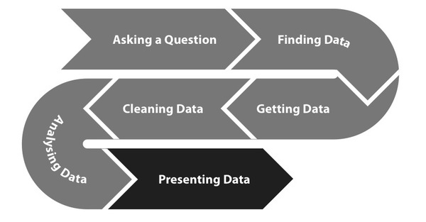
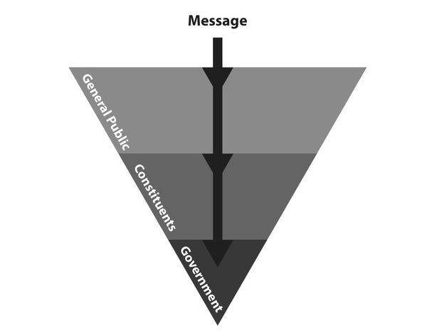

While raw financial data is valuable just as a tool for research, analysis and investigation, it can also be directly presented to an audience in a wide variety of ways. Such presentations can take the form of press releases in which data is used to make an argument, interactive infographics which condense information to visually represent a key finding or even searchable on-line databases that allow each user to find spending in their neighbourhood.

"It seems that perfection is reached not when there is nothing left to add, but when there is nothing left to take away" - Antoine de Saint Exupéry
If you are reading this, you probably already have a fairly clear idea of the topic that you want to investigate and present. Still, it is useful to look at different ways of defining your subject. In some cases, you may merely want to give an overview of a particular area, e.g. by showing the proportions of government spending which go into the various functions of government. In other cases you may have a particular hypothesis that you want to portray or a particular journalistic story that you mean to tell, such as a case of systemic corruption that becomes evident only as you contrast one department's spending patterns with that of another one.
Sometimes there is a temptation to get lost in complexity. Using all the data and tools available to you to their full potential can force an almost endless amount of information onto our audiences. The benefit of doing so is limited, however: people will not understand the point that you are making, or, even worse, ignore you.
At the same time, technology can also be used to do the opposite: focus in on the key points, hiding other detail. Selecting where to go into depth doesn't have to be the author's responsibility any longer, it can be a choice that the user of data-driven applications is empowered to make based on their own interests. The prerequisite for using technology to create a clear focus is answering the question: What is the core of what we mean to present, what is the essence of the narrative our project is intended to convey?
As you focus the topical core of your project, you also need to think about the objectives of your project: is it intended to inform the general public about an aspect of government budgeting or spending practices? Are you making a specific case to government, e.g. by proposing a new policy which you have gathered evidence and developed arguments for?
Your project can also serve as a forum for discussions, which would usually require you to facilitate the debate to maintain ongoing engagement.
The objective may be to establish a network-based, collaborative effort, e.g. to build a community that may review documents released by the government or evaluate the conditions of public contracts. Such modes of engagement require extensive design to encourage users to contribute in a way which best matches their particular skills and interests.
Some example of working with the public to collaboratively clean up financial data is Linked Gov (http://linkedgov.org/). This is a platform that will allow the public and civil servants to access and do small tasks that will clean government financial data.
The efficiency of projects based on spending data depends heavily on how well you have defined and understood your audience. If your message is too general for a specialized audience, it will be ignored. At the same time, a complicated and very technical presentation will usually fail to address broader parts of the population. Whether it be that your main audience is a specific constituency, government officials, the general public or a combination of those, it is important that the media and methods you apply help to get the message(s) across to the audience that you are targeting.
Is the purpose of your campaign to stimulate discussion amongst the general public? Unless your organization has exceedingly well-developed outreach channels, you will not usually be able to address the general public directly. Still, thanks to the social media and internet-based direct communication, many organizations can now contact and involve citizens who have shown some interest in their work directly. In cases where your main audience is the general public, simplicity is a must. It is necessary that the vast majority of people get a grasp of what you are trying to communicate. In these cases you may need to emphasize the visual presentation of the data that gets quickly and succinctly to the point, such as infographics. See the case study at the end of this chapter for how an organisation in Nigeria used Social Media to reach out to the general public.
Unlike direct channels, broadcast and print media require you to first convince an intermediary of the relevance and quality of your message. Media are often the best channels to use when we want to create social pressure on governments to change some budget issue.
This may include people and organizations with which you have previously cooperated or which are active in the same domain. Unlike the wider public, they are more likely to be interested not just in your conclusions, but also in the data and tools that you have used to reach your conclusions. Creating an open space for your community to discuss your work is essential in getting relevant feedback. When you need to reach to your constituency it may be necessary to provide a broader context, such as a full report including methodology, conclusions and possible paths of further discussion.
Officials are often a target of your outreach, since they are in the position of actually deciding and implementing changes in policy. While they can be reached through public pressure and the media, your organization or some of its constituency may also choose to contact governments directly. In the case of trying to reach government officials, a balance of the previous approaches is very important. Meetings with government officials are rare and short-lived. Condense your main argument and supporting evidence into one page or less, and include a clear action that you want them to take.
Obviously, on any given issue you may choose to involve any set of these groups, but it is still important to have a clear picture of who they are and what their incentives motivate them.

BudgIT Nigeria on social media
Data is invaluable. To the uninformed person where information asymmetry thrives, access to data illuminates the path to facts and provokes emotions that trigger results. Nevertheless, poor handling of data puts valuable facts in an opaque structure that communicates nothing. Data could be in a maze of thick document riddled with complex terms or iterations of figures that doesn’t connect the user. Not being able to promote discussion nor give provide contextual understanding, data may could be worthless.
Nigeria returned to democracy in 1999 after lengthy years of military rule. Data under the barrel of the gun was an exclusive preserve of rulers as probing the facts behind data is taken as an affront to authority and strive to question the stained reputation of the junta. Civil servants were bound by the Official Secrets Act not to share government information hereby putting the citizens in the dark. Even after thirteen years of return to democracy, there is clearly a gap in accessing public data with some government officials still stricken with military era hangover. Data especially in terms of public expenditure communicates little to the larger sections of public who are not versed in financial accounting nor have requisite understanding to evaluate the complex arithmetic.
BudgIT, creative start-up sees a huge opportunity in using creative data visualization to stimulate interests concerning public expenditure. Understanding the ubiquity of the mobile device within the Nigerian locality and the increasing number of Nigerians online, BudgIT sees the opportunity to engage Nigerians and explain public expenditure in a simpler way. This thrives on building engagement across all platforms, encouraging the community to action via NGOs and reaching out to everyone to promote citizen participation. This is about making public data a social object and building an extensive network that demands change.
Across our interactions with users, we see a gulf in understanding what the budget is and what the citizens usually expect. We have engaged over 10,000 Nigerians over the budget and we profile them into three to ensure optimum value is delivered. The categories are briefly explained below:
Singular Users: These are users who want information in simple and quick format. There are interested in data but not in a deeper scale of analyzing the content or probing further. A series of simple tweets is enough for them to retell the stories or interactive applications that give a snapshot.
Closed Loop Users: A set of users who stimulate a discussion pattern, engage the data channel effectively to increase their knowledge of subject matter or challenge the assumptions of data. These set of users are adherents of the platform via social media, hence they ensure in building the platform through feedback systems or referral to their social connections.
The Data Hog: This set of users want the raw datasets to rework visualization or do extensive analysis for personal or enterprise purposes. We simply give them the data for their definitive purposes.
Across every society lies a literacy span and engaging every component is highly critical to the societal growth and stability. There is always a storyboard in every life that volumes of data can be matched with. People constantly want to be more informed especially concerning issues that they find difficult to understand. Engaging citizens is to take critical analysis of the target users at a time and itemize the possible profiles. A look at user profile demands a thorough analysis of their empathy, attention and insight towards the data available to them. What does the Nigerian citizen care about? Where is the information gap? How quickly can we reach out to them and place data in the storyboard of their lives? A critical understanding of the user’s psychology and the perceived response to the data is the first needed level of analysis. BudgIT’s immediate reach is to the average literate Nigerian connected to online forums and social media. Most online users amidst the array of interests in gaming, reading and sharing social connections within a limited timeframe will definitely need data in a brief and concise manner. After a snapshot of data either as a tweet or infographics, there’s an opportunity to build linked data on other platforms where the big picture can be set and interaction can be enhanced. <p >An important angle of visualization to us is understanding the data appreciation level of the users. Complex diagrams, superb infographics and aesthetic interactive applications might not convey the exact meaning to user based on his/her previous approach to data. Data vizualization needs to take into consideration how users can easily grasp the vizualized data and subject it to personal interpretation. A good visualization transfers knowledge and mostly important brings forth a story the user can easily connect with.
For us in BudgIT, our engagement model is anchored on the following:
After making the public expenditure data available in an easy-to-read format as shown on our portal (http://yourbudgit.com), we reach out to the citizens through the civil society organizations to ensure that citizens monitor capital projects in the budget. We also plan to develop a participatory framework where citizens and government institutions can meet in town halls to define key items in the budget that needs to be prioritized. Once we get citizens to be aware of capital projects in the budget and connect them with civil societies where BudgIT is not located, citizens can track report projects and report status. Ensuring that citizens of any literacy span are armed with data and possess a clear path to demand action, BudgIT is crossing the rubicon from open data to open action.